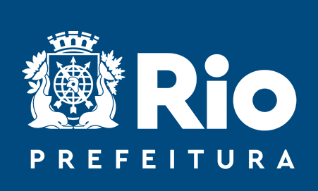

sobre o sandbox
o que é?
vantagens
quem pode participar?
como funciona?
equipe
chamadas
ciclo de seleção
edital e anexos
FAQ
transparência
publicações
projetos em andamento
PUBLICAÇÕES
Sandbox regulatório: instrumento experimentalista à disposição da Administração Pública local como suporte ao desenvolvimento
por Carina Quirino |
02/10/2023
IA, sandbox regulatório e cooperação interinstitucional
por Carina Quirino |
10/09/2023
As múltiplas facetas conceituais do sandbox
por Carina Quirino |
26/03/2023
A importância do sandbox regulatório para municípios
por Carina Quirino |
10/09/2023
Sandbox regulatório em prol do desenvolvimento econômico local
por Carina Quirino |
14/05/2022
Sandbox regulatório: instrumento experimentalista à disposição da administração pública local como suporte ao desenvolvimento econômico. Conferência Internacional da Cátedra UNESCO em Economia
por Carina Quirino |
31/10/2022
NOTÍCIAS
Projeto para negócios inovadores
Correio da Manhã | 31/05/2024
Ler mais
Prefeitura abre novo edital do Sandbox.Rio e quer atrair empresas estrangeiras
O Globo | 04/08/2023
Ler mais
SANDBOX.RIO - O RIO É TECH - VIDEOCAST #12
BandNews FM | 25/07/2023
Ler mais
Iniciativas em inovação da Prefeitura do Rio entram na biblioteca de estudos de caso da OCDE
27/09/2023
Ler mais
Projeto de implantação de rede pública de eletropostos é aprovado no Rio de Janeiro
Estadão | 07/07/2023
Prefeitura apresenta produtos do Sandbox.Rio, ambiente que busca trazer soluções inovadoras para a cidade
04/07/2023
Ler mais
Programa de inovação regulatória da prefeitura do Rio terá drones e robôs em testes pela cidade
O Globo | 03/07/2023
Ler mais
Rio Innovation Week: Capital fluminense lança ‘sandbox’ regulatório
O Globo | 14/01/2022
Ler mais

Secretaria Municipal de Desenvolvimento Econômico do Rio lança programa para incentivar inovações no setor público
14/01/2022
Ler mais
Rio de Janeiro publica edital para projetos em sandbox regulatório
mobiletime | 02/05/2022
Ler mais
Sandbox.Rio: município vai testar produtos, serviços e processos inovadores
AB2L | 02/05/2022
Ler mais
-->
:strip_icc()/i.s3.glbimg.com/v1/AUTH_da025474c0c44edd99332dddb09cabe8/internal_photos/bs/2023/z/r/6IkWNNTdiOZ9cL2vigIw/whatsapp-image-2023-07-03-at-18.36.43.jpeg)
/i.s3.glbimg.com/v1/AUTH_da025474c0c44edd99332dddb09cabe8/internal_photos/bs/2023/z/r/6IkWNNTdiOZ9cL2vigIw/whatsapp-image-2023-07-03-at-18.36.43.jpeg)